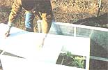
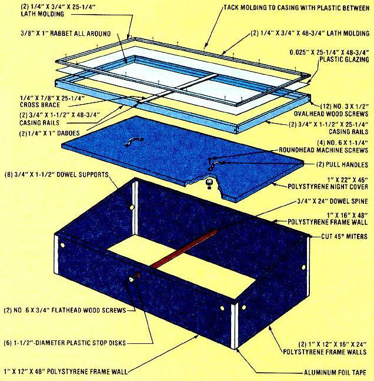

If you're "hot" to get started on your garden but short on the necessary cold cash, consider building . . .
It's that time of year again . . . when most dedicated gardeners give some thought to getting a jump ahead of the still-chilly weather by utilizing a cold frame to protect delicate seedlings from the effects of spring frosts. And as many of you know, the design illustrated here isn't the first "solar nursery" we've detailed in this publication (and it probably won't be the last!), but it just may be the least expensive surrogate greenhouse of its size we've come across yet!
The ideal cold frame, of course, admits sunlight to the plants it contains, to supply them with both the heat and the light they need to prosper and "harden" before being exposed to the real world . . . and, at the same time, provides the seedlings with adequate protection from bitter winds and chilling cold.
This particular model requires little more than 1" polystyrene insulation board (at 15 cents per square foot), some scrap lath and molding, a 36" length of 3/4" dowel, assorted hardware, foil tape, and a section of fiberglass-reinforced plastic glazing measuring just over 2' X 4'. (The last component, at $1.06 per square foot, costs more than the sum of all the other parts . . . but if you enjoy making your own solar collectors, you might well have some leftover FRP around. If not, old storm windows or the glass from them-or even heavy-duty clear plastic-can be used as a suitable, and much less expensive, substitute.)
To build the cold frame, just cut the various pieces to the sizes called for in our drawing, then form the holes that retain the night cover's ten support dowels. These openings should be about 19 inches apart and 10 inches above the frame walls' lower edge, and can most easily be made by gently heating a short length of 1/2" copper pipe (using a torch and a pair of pliers) and then letting this hot tool serve as a "drill" to cut the perforations. It's important not to apply too much heat to the boring wand, though, or the holes will be oversized and the dowels won't fit snugly. (CAUTION: Do not breathe the fumes given off in this process, since they contain noxious gases.)
Next, assemble the frame by joining all four corners, inside and outside, with aluminum tape . . . then press the 3/4" X 24" dowel through the two center holes to make the spine that connects the front and back walls, and push the remaining pegs into the rest of the openings in such a way that their "back" ends protrude past the inner surface to form shelves at strategic points around the frame. Keep the spine in place by fastening body washers, scavenged milk jug lids, plexiglass disks, or what have you to its exposed ends, using No. 6 X 3/4" flathead wood screws. Then complete the frame by attaching the two handles to the night cover, again employing scrounged disks as stops.
The light-admitting lid is merely a framework, constructed from 1 X 2's, which holds the glazing in place beneath lath strips tacked to its upper surface. To make it, first miter (at 45° ) the ends of each of its side and end rails, then cut a 3/8"-wide by 1"-deep rabbet into the lower inside edge of the boards, and fashion a 1/4" X 1" dado-centered-in the upper surfaces of the two longest rails.
Fasten the casing together with three No. 3 X 1/2" ovalhead wood screws at each corner, then tack the 1/4" X 7/8" X 25-1/4" cross brace to the dadoed rails. Finish up the job by laying the plastic glazing over the framework and driving in brads or finishing nails-through the lath strip molding skirt-to secure it.
Because the polystyrene is apt to deteriorate after long exposure to direct sunlight, it's best to protect it-and the wooden parts of the cold frame-with acrylic latex exterior house paint . . . which won't adversely affect the insulation board.
To put your budget hothouse to use, just sink it about half a foot into the earth, or merely set it on top of some turned-up soil . . . making sure its sloped lid is facing in a more or less southerly direction. (If you choose not to bury the frame, secure it against gusty winds by driving a pair of stakes into the ground and fastening them to the ends of the spine with screws.)
In order to provide for sometimes necessary ventilation, you can either remove the lid completely (on sunny days), or just prop it open (by placing some 2 X 4 scraps at the corners) when the weather is overcast, and hold it in place with a restraining cord tied over it and behind the spine stops. Naturally, the night cover should be installed for the evening and left in place until the sun rises the next day. Furthermore, on especially cold nights-or if you should want to use your cold frame as a "hotbox"-you can always put a few strips of electric heat tape (the kind used to keep household plumbing from freezing) several inches beneath the soil, or just set up a light bulb within the container.
So why not spend a (very) few bucks and beat Jack Frost by three or four weeks? You'll be glad you did when your harvest gets to the dinner table that much sooner!
|
 |
 |
|